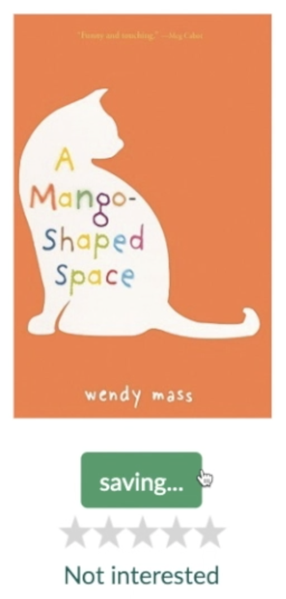

For this project, I designed and coded an interactive object as part of my coursework in IDM241- Microinteractions. Over 11 weeks, my focus was to create functional and engaging microinteractions. My design process included choosing an interactive section of an existing website, analyzing each microinteraction, ideating improvements, and, finally, coding them.
The interactive element I chose was a book tile from the recommendations page of Goodreads. The current tile is functional, but there were minor annoyances that I had ideas to improve on.
Pictured above are two spaces where I chose to improve on. The first is the “saving” state of the button. From the jump, I planned to completely remove this state. The “saving” state of this button is unnecessary because it causes the user to wait longer than needed for a quick action. The second area of improvement was the star rating. Once the user selects a rating, there is no way of going back and removing their rating. I decided to add a way for the user to remove their rating in my design. This will give the user confidence in their actions, knowing that they can take their action back.
The results reflect my goal of creating a functional, user-friendly interface while adhering to best practices in user experience design. By exploring these key components, I gained valuable insights into the intricacies of designing intuitive and functional interactions. This project showed not only the technical aspects behind microinteractions but also the reasoning behind each design decision.